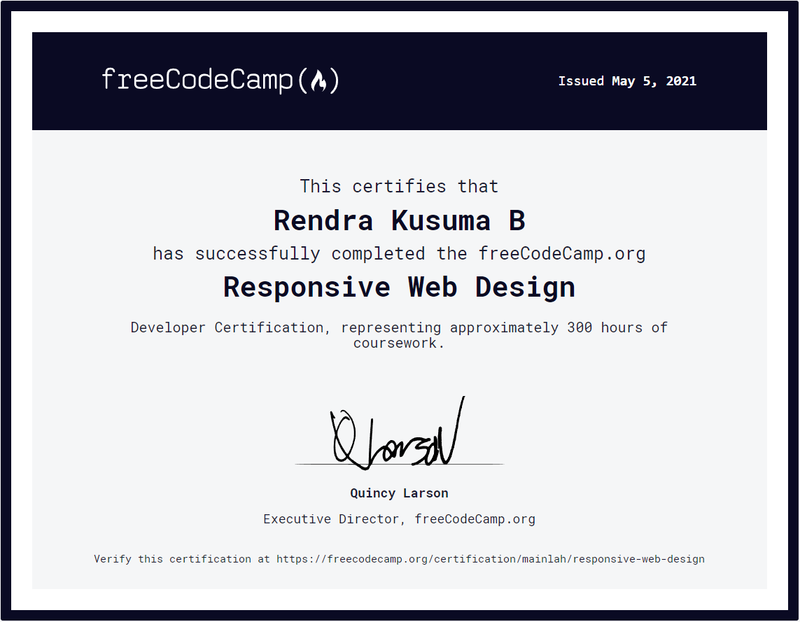
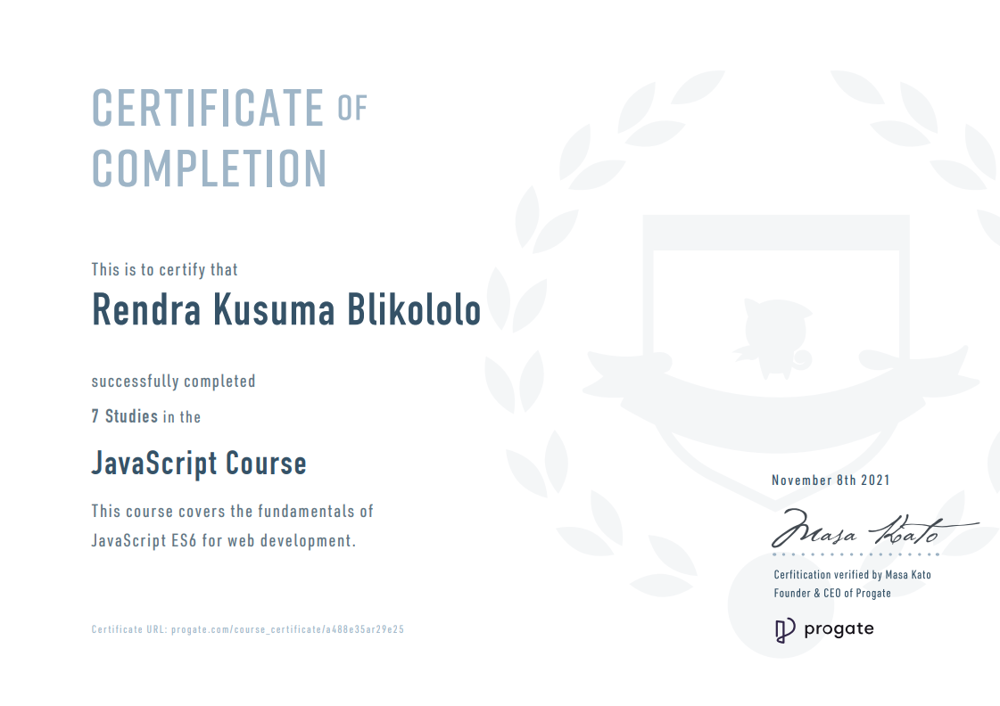

Click on the buttons or
on your keyboard to navigate!
My name's Rendra Kusuma Blikololo. I'm from Bogor, Jawa Barat,
Indonesia and I'm 19 years old. I'm currently studying English
Literature in Universitas Diponegoro. I've been interested in
computers since I was a kid. I used to watch my uncle do wonders with
them; making programs, building computers, and honestly, even video
games felt magical. I was the happiest kid when I finally got a PC. I
used to tinker with it so much. I finally got to build my own PC when
I was 16 years old. I'm confident that this is my passion. Even though
I'm learning English Literature, I think I can implement what I learn
there into computers and programming.
Skills :
Certificates :

